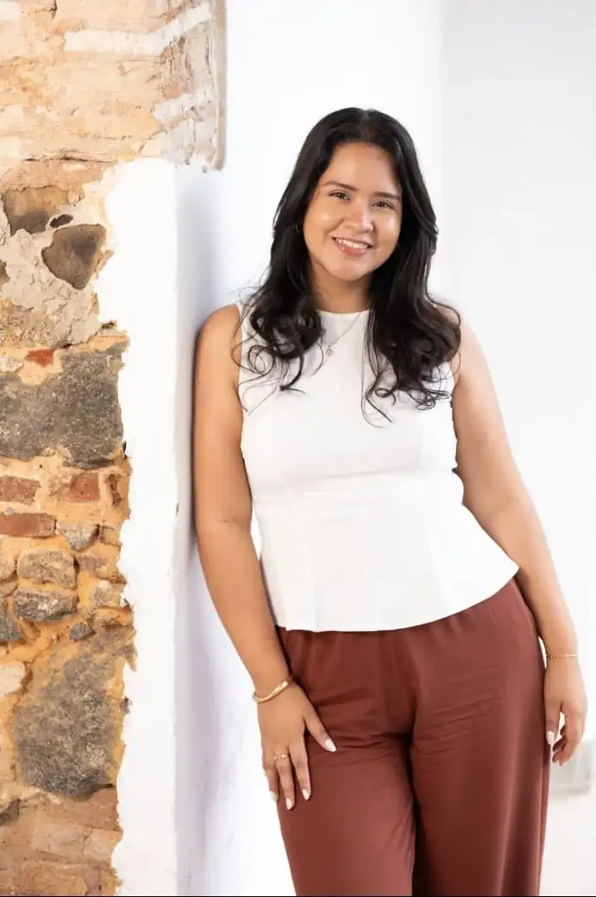

LISSETTE SALAZAR / ARQUITETURA AUTORAL
A casa
é sua história.
Projetos com identidade, aconchego e materiais que conversam com a natureza.
Conheça meus projetos UM OLHAR EM DESTAQUEMadeira, cor
UM OLHAR EM DESTAQUEMadeira, core acolhimentoEXPLORAR →
Cada projeto começa
pelo modo como vivemos.
Antes de definir materiais ou desenhar uma planta, existe a rotina de quem vai viver ali. Acredito em espaços que acolhem memórias e revelam personalidade nos detalhes: um quadro, uma textura, um móvel querido.
ARTE · MATÉRIA · AFETO
O essencial não é o que ocupa um espaço. É o que ele guarda de histórias, texturas e encontros.


Prazer,
sou Lissette.
Acredito que um bom projeto começa com uma boa conversa — e que cada espaço deve ter tanto de quem o habita quanto de quem o desenha.
Sou Lissette Salazar, arquiteta formada pela Universidade Vila Velha (UVV). Minha trajetória inclui vivências em escritórios de arquitetura e participação no desenvolvimento de projetos, experiências que fortaleceram meu olhar para o equilíbrio entre estética, funcionalidade e a realidade de cada cliente.
Tenho especial interesse pela arquitetura de interiores, pela escolha sensível dos materiais e por soluções que tornam os ambientes mais acolhedores e pessoais. Gosto de pensar o projeto por inteiro: do conceito inicial às decisões que fazem diferença no dia a dia.
Projetos & possibilidades.
Uma seleção de referências de ambientes com história: marcenaria, cor em equilíbrio, textura, plantas e objetos que dão personalidade a cada casa.
GALERIA DEMONSTRATIVA — imagens de referência visual. Não são projetos executados ou assinados por Lissette Salazar.
O detalhe não é o fim do projeto.
É onde tudo ganha sentido.
LS / ARQUITETURACasas para viver.
Do conceito
aos detalhes.
Um processo construído com escuta, clareza e atenção ao que realmente importa: criar espaços coerentes com quem vai vivê-los.

Escutar e compreender
Entender sua rotina, seus desejos, suas referências e as necessidades concretas do espaço.
Dar forma às ideias
Transformar informações em conceitos, estudos e soluções que conciliam beleza e funcionalidade.
Escolher com intenção
Pensar materiais, proporções, texturas e iluminação para criar uma atmosfera única e consistente.
Cuidar dos detalhes
Refinar as escolhas e organizar o projeto com atenção à experiência de quem vai ocupar cada ambiente.
Vamos criar
algo com sentido?
Toda boa ideia começa com uma conversa. Conte sobre o espaço que você deseja transformar.
Converse diretamente pelo WhatsApp com Lissette Salazar.